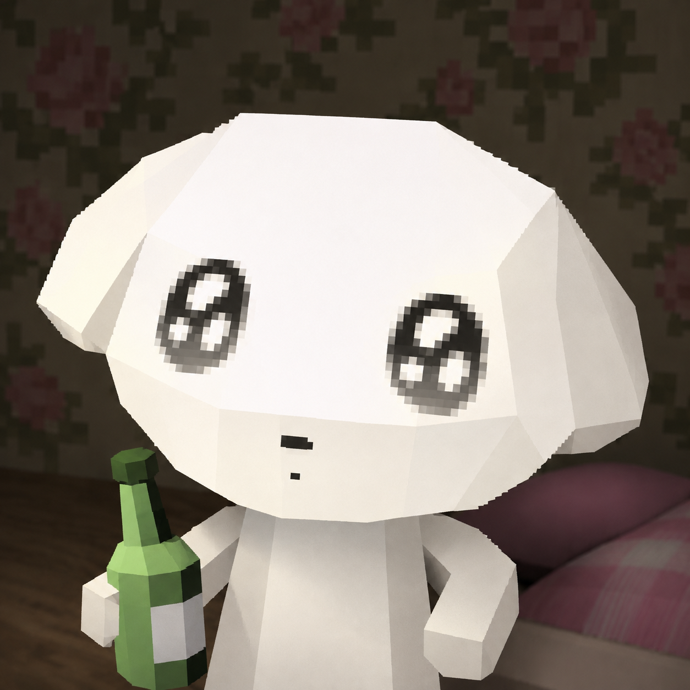

w
wQuiz
학습 홈
단어 퀴즈
오답 목록
←
홈으로

마이페이지
중요단어
설정
YOUR REVIEW LIST
오답 복습
틀렸던 단어를 다시 풀며 내 것으로 만들어 보세요.
오답 다시 풀기
→
↻
0
개의 단어를 복습할 수 있어요
정답을 맞히면 목록에서 자동으로 정리돼요
✓
ALL CAUGHT UP
복습할 오답이 없어요
퀴즈에서 틀린 단어가 생기면 여기에 모아둘게요.
퀴즈 풀러 가기
→
← 학습 홈으로 돌아가기